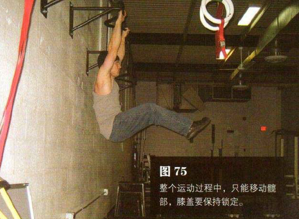
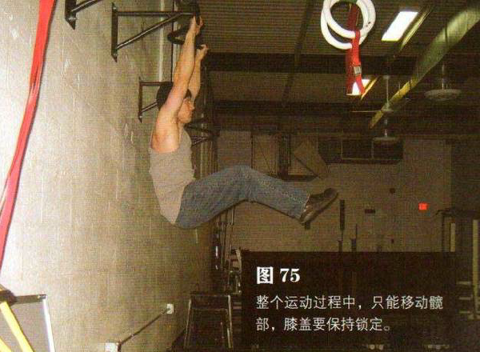

悬垂蛙举腿
起始姿势与第七式悬垂屈举腿相同（图74），就像做第七式一样，抬起双腿。双脚与髋部在同一高度时（图 75），再将双脚伸向正前方，直至双腿完全伸直。这时双腿与地面平行，即与上半身之间的夹角成 900（图 76）
 

暂停一下，然后慢慢放下双腿，在此过程中双腿始终伸直（图 77）。该动作完成时，身体完全伸展（图 78）。然后回到起始姿势，重复练习。
举腿时呼气，下降时吸气，腹部从始至终都要收紧。

初级标准：1 组，5 次
中级标准：2 组，各 10 次
高级标准：2 组，各 15 次